Outcomes <- c("H","T")
Probability <- c(0.7,0.3) Chapter 7 - Practice Activities
This section contains little activities that will initially teach you the code, then provide you with questions that allow you to recreate the code and adjust it to help you learn the processes.
Some of these are a lot trickier than others but just take it slow and think about what needs changing (or you can just look at the solution and learn from that :) )
Coin Flip
Define your variables
First, you want to create a variable for your outcomes. Since this is a coin flip, there will only be two possible outcomes: Heads or Tails.
This step defined your variables as Outcomes and assigned a probability to each possible result.
Simulating the flip
Here we can define how many times the coin is flipped and how many sets of those flips are tested.
library(ggplot2)
Flips <- replicate(20,
sample(Outcomes,
size = 10,
prob = Probability,
replace = TRUE))This is the main simulation. Using our designated probability, it will make 10 selections while resetting (Replace = TRUE), so that each flip is independent. This process will then be repeated 20 times (replicate(20, ….) )
Creating a Data frame
A data frame will store your results in a table once you have told R what to store and how.
flipresults <- data.frame(
Flips = 1:20,
H = numeric(20),
T = numeric(20)
)These lines store the data frame as flipresults, each following line will correspond to a column in the table. For example, column 1 will be ‘Flips’, representing all sets 1–20; the next two will be ‘Heads’ and ‘Tails’, set to represent the data numerically.
Count the results
For this step, you want to make sure that R reads the data frame on the correct columns for each experiment and collates both the heads and tails into a total value instead of a list of H or T.
for (i in 1:20) {
countsFl <- table(factor(Flips[, i], levels = Outcomes))
flipresults$H[i] <- countsFl["H"]
flipresults$T[i] <- countsFl["T"]
}The first line tells R to loop through all 20 sets of coin flips. The next column indicates what needs to be included and where to find it.
Flips[, i] -> names the column to search
Factor(…, levels = outcomes) -> ensures it includes all the variables you listed under ‘outcomes’, in this case ‘H’ and ‘T’.
table() -> this is the function which does the counting.
Visualisation of the results
The distribution of results for a test like this can be presented in many ways, but the best way to show all the results on a single graph is a line graph, which plots heads and tails side by side.
matplot(
flipresults$Flips,
flipresults[,2:3],
type = "l",
lty = 1,
col = 1:2,
xlab = "X",
ylab = "y",
main = "FLIPS",
xaxt = "n"
)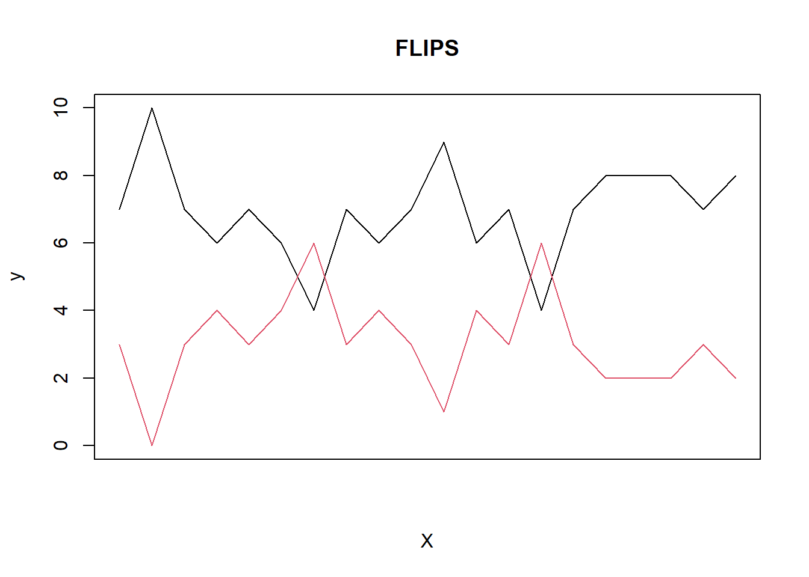
Matplot is the function of the line graph we are going to use, revisit Chapter 3 for why!.
Flipresults$flips is our stored value in column one of the data frames; this represents the set of flips (1-10), and this will be on the X axis
Flipresults[,2:3] tells R to include columns 2 and 3 of our data frame on the Y-axis; [,2:3] refers to columns 2 and 3, which contain our results (‘H’ or ‘T’).
The other lines of this code are ways to stylize or tidy up your plots: Type = ‘l’, -> Makes the graph into a line graph Lty = 1, -> Makes the lines solid Col = 1:2, -> Sets the colours of the lines, matching with the order of the vector.
The following 3 lines are simply labels for your axis.
Xaxt = “n” -> this may not always be necessary, but when working with such large amounts of data, this allows you to adjust the x-axis intervals so that your graph isn’t so crammed.
This is the line of code that allows us to customize our Axis from Rs default:
axis(1, at = seq(1, 50, by = 3))
Here, R runs through all the sets of flips performed and selects every 3rd to apply to our graph, simply because it makes the graph less cluttered.
Finally, you just need to add a legend, which can be done with this:
legend(“topright”, legend = c(“H”, “T”), col = 1:2, lty = 1)
This line specifies the locations, which vector to include as labels, the colour of each variable in that vector, and how they are presented on the plot.
Results
Here is the graph that is produced at the end. As you can see, our legend shows the colour-coded results, the labelled X & Y axes, and results from every 3rd set.
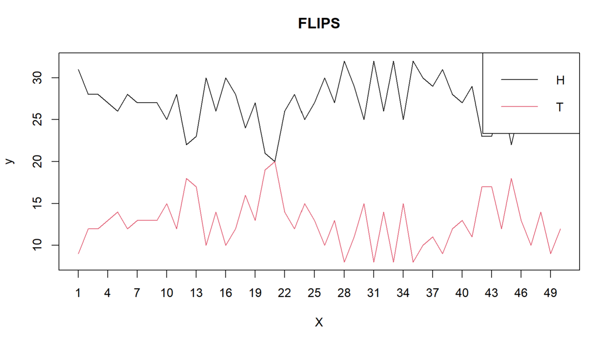
Practice Question
You flip a coin that has equal chance of landing on heads or tails, HOWEVER, There is a 4% chance it will land on its side. Store the variable and simulate flipping the coin 20 times, then repeat the experiment 10 times. Plot The results.
Challenge - Plot using ggplot
NoteSolution
outcomeCF <- c("H", "T", "S")
Prb <- c(0.48,0.48,0.04)
Flips <- replicate(10,
sample(outcomeCF,
size = 20,
prob = Prb,
replace = TRUE
)
)
results_of_flips <- data.frame(
Flips = 1:10,
H = numeric(10),
T = numeric(10),
S = numeric(10)
)
results_of_flips Flips H T S
1 1 0 0 0
2 2 0 0 0
3 3 0 0 0
4 4 0 0 0
5 5 0 0 0
6 6 0 0 0
7 7 0 0 0
8 8 0 0 0
9 9 0 0 0
10 10 0 0 0for (i in 1:10) {
countsFl <- table(factor(Flips[, i], levels = outcomeCF))
results_of_flips$H[i] <- countsFl["H"]
results_of_flips$T[i] <- countsFl["T"]
results_of_flips$S[i] <- countsFl["S"]
}
matplot(
results_of_flips$Flips,
results_of_flips[,2:4],
type = "l",
lty = 1,
col = 1:3,
xlab = "X",
ylab = "y",
main = "FLIPS",
xaxt = "n"
)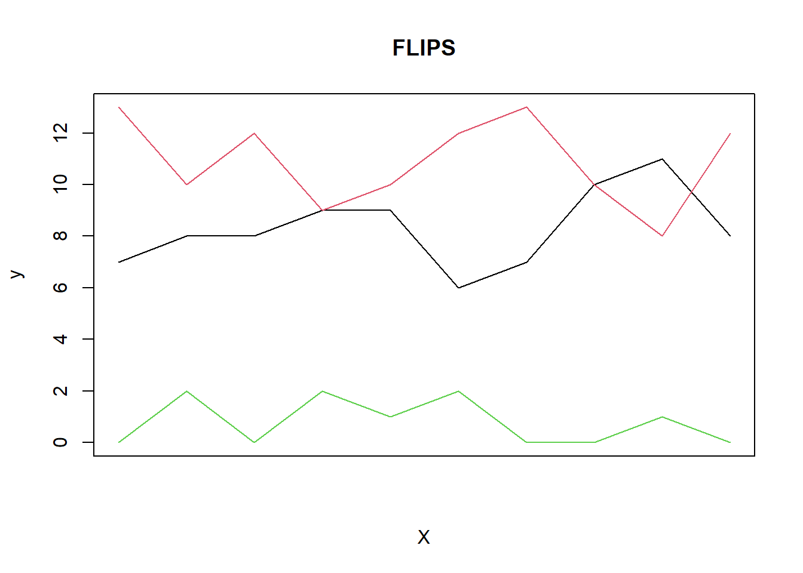
Dice Game
Define your variables
We are going to assume that we have a six-sided, fairly weighted die so that all faces have an equal chance of appearing. Firstly, we need to store the outcomes along with their probabilities, the same as the coin flip activity.
outcomes <- c("1","2","3","4","5","6")
probs <- rep(1/6, 6)Simulate rolls
Here we again need to simulate the rolling of the die, let’s say we roll the die 100 times.
rolls <- replicate(
100,
sample(
1:6,
size = 1,
prob = probs,
replace = TRUE
)
)View the results
As this is a fair sided die, we can expect that our mean would be around 3.5 (1+2+3+4+5+6 /6), and depending on random sampling our medium would be around 3-4. To double check this, we can run basic descriptive stats
table(rolls)rolls
1 2 3 4 5 6
23 12 19 19 18 9 mean(rolls)[1] 3.24median(rolls)[1] 3So, for example, you may see:
Mean = 3.47
Median = 4
Plot a histogram
For data such as this, the best way to view it could be a histogram. To plot this is R you would use this code:**
hist(
rolls,
breaks = seq(0.5, 6.5, by = 1),
main = "Histogram of Rolls",
xlab = "Roll",
col = "lightgrey"
)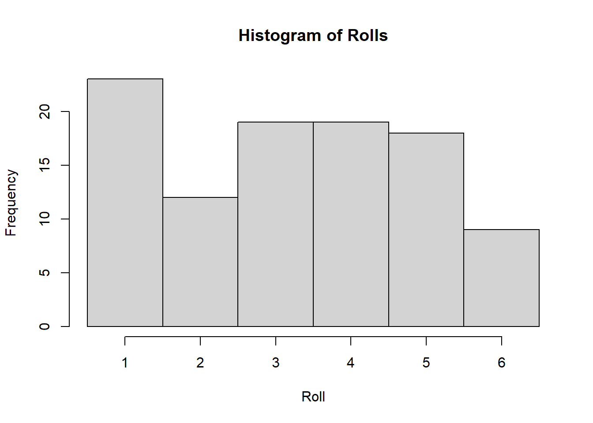
‘Hist’, is your function for creating the histogram using the ‘rolls’ results. The next line creates spacing for the bins (columns in a histogram). As we want each column to only include the data for each FACE, we designate the bins as starting at 0.5 and ending at 6.5 while increasing at a rate of 1.**
Because of this we do not have any overlap of data in our graph. For example, 0.5 – 1.5 will only contain 1, 1.5 – 2.5 will only include 2 and so forth. this works well in this occasion because all of our results will be whole numbers (1,2,3,4,5,6).
Practice Question
Simulate 600 rolls of a biased die with probabilities of your choice, create a histogram and explain how the bias is suggested.
Challenge - Plot using ggplot
NoteSolution
outcomes <- c("1","2","3","4","5","6")
probs <- c(0.1,0.1,0.15,0.2,0.3,0.05)
rolls <- replicate(
600,
sample(1:6, size = 1, prob = probs, replace = TRUE)
)
results <- table(rolls)
mean(rolls)[1] 3.753333median(rolls)[1] 4hist(
rolls,
breaks = seq(0.5, 6.5, by = 1)
)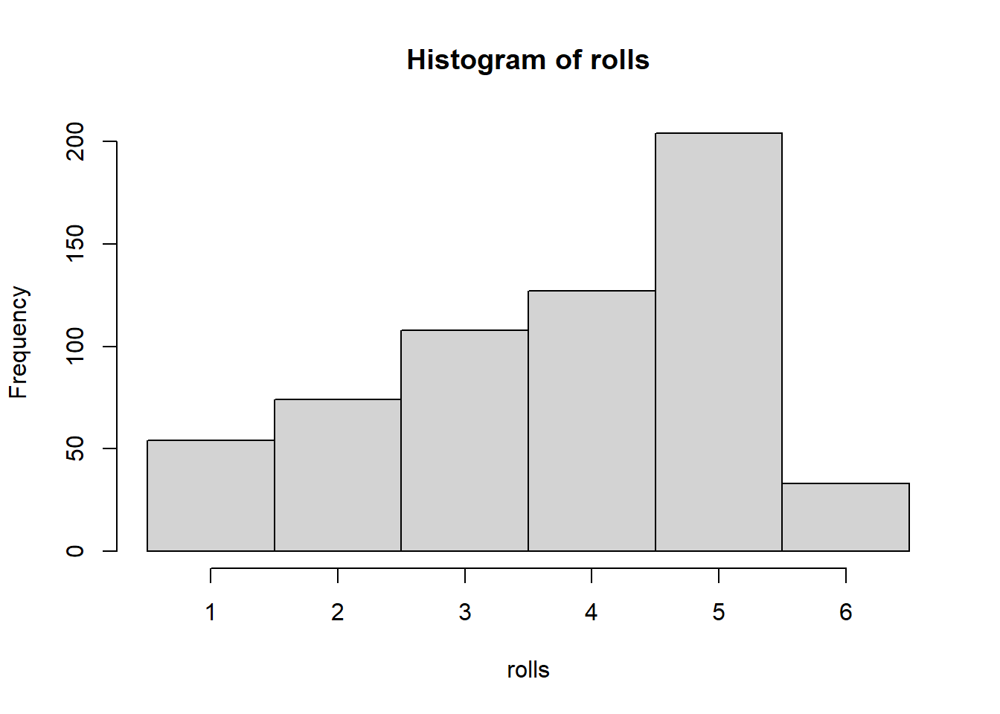
NoteChallenge
outcomes <- c("1","2","3","4","5","6")
probs <- c(0.1,0.1,0.15,0.2,0.3,0.05)
rolls <- replicate(
600,
sample(1:6, size = 1, prob = probs, replace = TRUE)
)
results <- data.frame(rolls)
ggplot(data = results,
aes(
x = rolls
))+
geom_histogram(
colour = "black",
binwidth = 1,
fill = "lightblue"
)+
scale_x_continuous(
breaks = seq(0, 7, by = 1)
)+
labs(
title = "Dice game",
subtitle = "Simulating 600 rolls of a weighted die",
x = "Outcome",
y = "Frequency"
)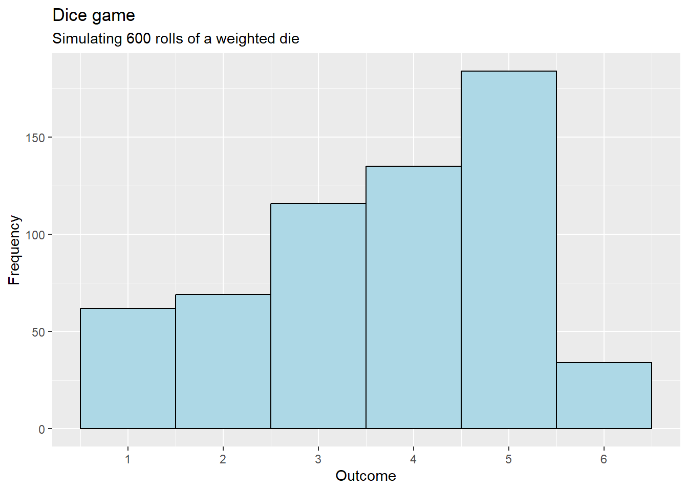
Weather analysis
Read the data
This is a different start to our example as we do not need to define any variable, as we are not simulating anything. For this we need our to read our CSV file so that it can work with the data we have stored.
Note
Here is some data for this example:
| Date | Temperature | Rainfall | Humidity | Windspeed |
|---|---|---|---|---|
| 01/06/2025 | 18 | 2 | 75 | 12 |
| 02/06/2025 | 20 | 0 | 68 | 10 |
| 03/06/2025 | 22 | 0 | 65 | 8 |
| 04/06/2025 | 19 | 5 | 82 | 15 |
| 05/06/2025 | 17 | 12 | 90 | 20 |
| 06/06/2025 | 21 | 1 | 70 | 11 |
| 07/06/2025 | 23 | 0 | 60 | 9 |
| 08/06/2025 | 24 | 0 | 58 | 7 |
| 09/06/2025 | 22 | 3 | 72 | 14 |
| 10/06/2025 | 20 | 8 | 80 | 16 |
| 11/06/2025 | 19 | 10 | 85 | 18 |
| 12/06/2025 | 21 | 2 | 74 | 13 |
| 13/06/2025 | 25 | 0 | 55 | 6 |
| 14/06/2025 | 22 | 4 | 70 | 12 |
| 15/06/2025 | 22 | 4 | 70 | 12 |
| 16/06/2025 | 22 | 4 | 70 | 11 |
| 17/06/2025 | 22 | 4 | 70 | 11 |
| 18/06/2025 | 22 | 4 | 70 | 1 |
weather <- read.csv("Weather data for guide.csv") Once this data has been read and renamed it should appear in your environment panel.
Basic descriptive stats
For this Example, we are going to focus on Temperature and Humidity but before we move forward we want to quickly check everything has been imported correctly.
Note
head(weather) Date Temperature Rainfall Humidity WindSpeed
1 01/06/2025 18 2 75 12
2 02/06/2025 20 0 68 10
3 03/06/2025 22 0 65 8
4 04/06/2025 19 5 82 15
5 05/06/2025 17 12 90 20
6 06/06/2025 21 1 70 11str(weather)'data.frame': 18 obs. of 5 variables:
$ Date : chr "01/06/2025" "02/06/2025" "03/06/2025" "04/06/2025" ...
$ Temperature: int 18 20 22 19 17 21 23 24 22 20 ...
$ Rainfall : int 2 0 0 5 12 1 0 0 3 8 ...
$ Humidity : int 75 68 65 82 90 70 60 58 72 80 ...
$ WindSpeed : int 12 10 8 15 20 11 9 7 14 16 ...summary(weather) Date Temperature Rainfall Humidity
Length:18 Min. :17.00 Min. : 0.00 Min. :55.00
Class :character 1st Qu.:20.00 1st Qu.: 0.25 1st Qu.:68.50
Mode :character Median :22.00 Median : 3.50 Median :70.00
Mean :21.17 Mean : 3.50 Mean :71.33
3rd Qu.:22.00 3rd Qu.: 4.00 3rd Qu.:74.75
Max. :25.00 Max. :12.00 Max. :90.00
WindSpeed
Min. : 6.00
1st Qu.:10.25
Median :11.50
Mean :12.00
3rd Qu.:13.75
Max. :20.00 head(…) will display the first few lines of your data set so that you can see if everything have been read correctly, whereas str(…) will display the structure of the dataset, displaying the observations, columns and that the numbered values are stored correctly.
While summary, as you can see, will produce min/max/median/mean/quartile values for each column in your data set.
Plotting the data
So, initially looking at humidity, we can plot the data points against time to see the change of humidity throughout the data. The main thing the takeaway from this code, is the use of $. As mentioned in Chapter 2, this is an operator which will make R scan ‘weather’ for the data in column ‘humidity’.
plot(weather$Humidity,
type = "l",
col = "blue",
xlab = "Day",
ylab = "Humidity (%)",
main = "Daily Humidity")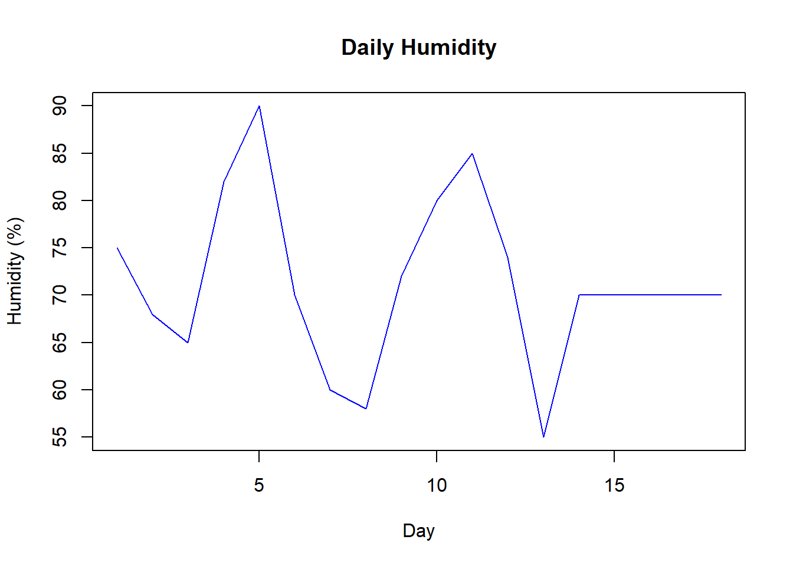
We can also do the same for Temperature:
plot(weather$Temperature,
type = "l",
col = "red",
xlab = "Day",
ylab = "Temperature (C)",
main = "Daily Temperature")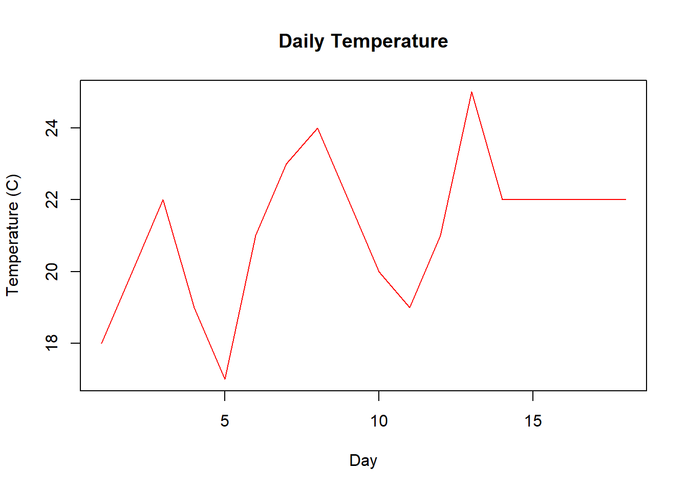
Combining the two
We currently have the two scripts which allow us to visualize the two sets of data independently, but what if we wanted to compare the relationship between the two? R will allow us to combine these two sets of data into one plot:
As you can see, the only difference here is that we have added both operator lines into the code, which will tell R to include BOTH sets of data. This isn’t enough, so we can add a final line which will add a line of best fit.
This line is made of two functions, the initial function using lm(…) is the linear model, which will find the line that describes the relationship of the variables within the brackets. In this case its Humidity and temperature, but we have used ‘~’, which simply means ‘depending on’. abline(….) is the function that draws the line on our plot.
So essentially this line would translate to, ‘Using the ‘weather’ data, find the line of best fit of how humidity changes depending on temperature. Then draw it on the plot’. This will then give this:
plot(weather$Temperature,
weather$Humidity,
xlab = "Temperature (°C)",
ylab = "Humidity (%)",
main = "Temperature vs Humidity")
abline(lm(Humidity ~ Temperature, data = weather),
col = "red")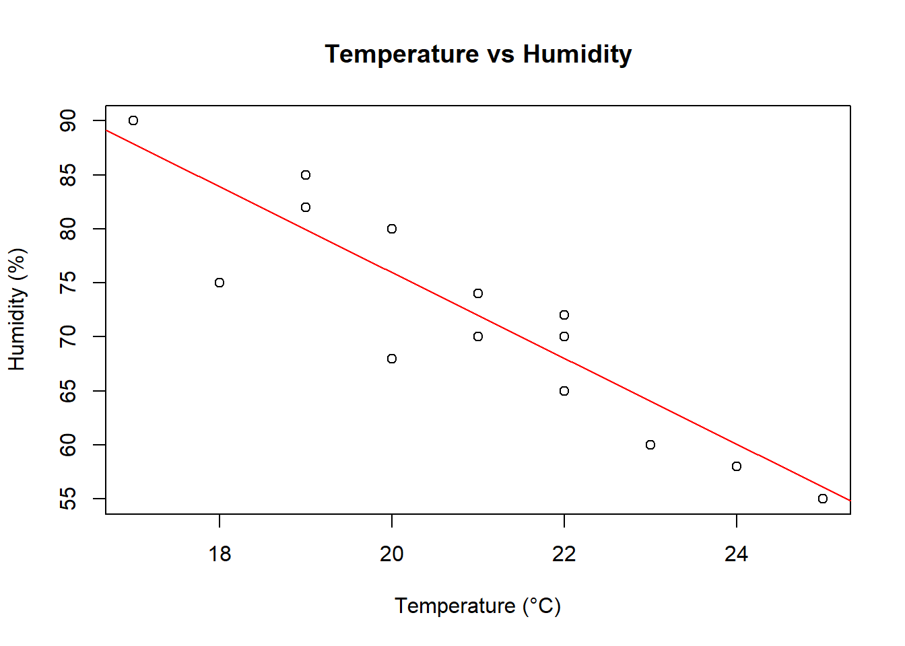
Finally, although this graph is quite clear, we would want to add a value to the correlation between the two data sets. This will return a value for the relationship between the two data sets.
cor(weather$Temperature, weather$Humidity)[1] -0.8976849Practice Question
Using the same data set, compare Rainfall and Humidity. Plot a scatter plot with a line of best fit, then calculate the correlation.
Challenge - Plot using ggplot
NoteSolution
import and store the data
plot(weather$Rainfall,
weather$Humidity,
xlab = "Rainfall",
ylab = "Humidity",
main = "Rainfall vs Humidity")
abline(lm(Humidity ~ Rainfall, data = weather),
col = "red")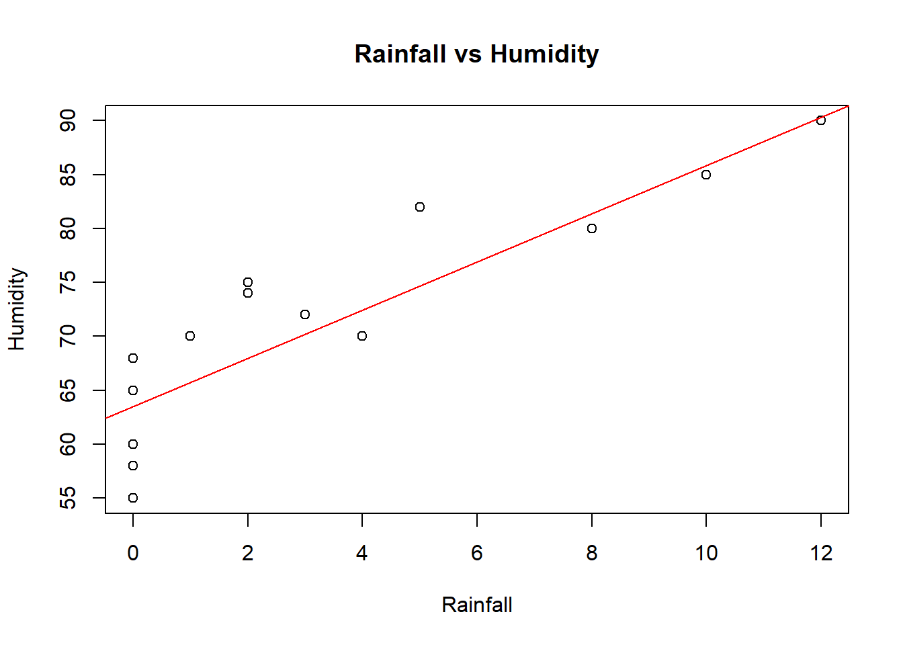
cor(weather$Humidity, weather$Rainfall)[1] 0.8720317
NoteChallenge
ggplot(data = weather,
aes(x = Rainfall,
y = Humidity))+
geom_point()+
geom_smooth(
method = "lm",
linewidth = 1,
colour = "red"
)+
labs(
title = "Weather analysis",
subtitle = "Comparing Humidity and Rainfall"
)+
theme_light()`geom_smooth()` using formula = 'y ~ x'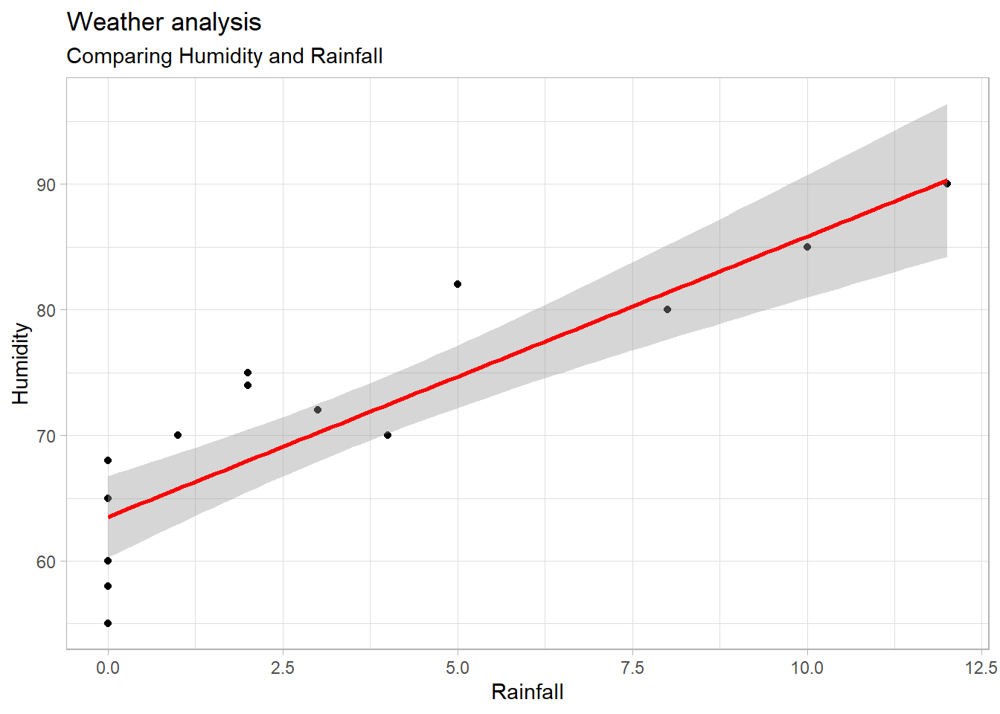